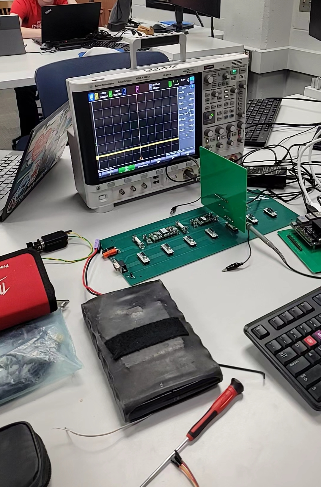
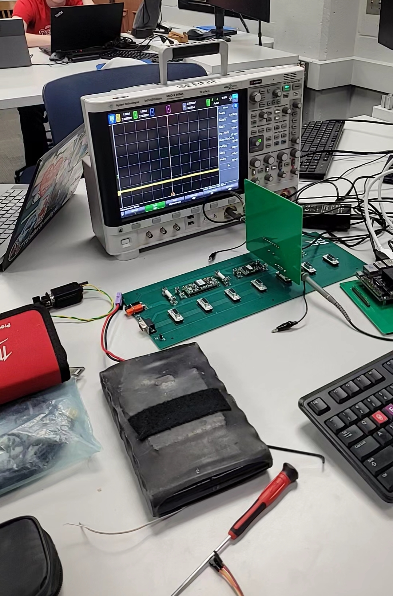

(github)
In the 2024-2025 school year, I contributed heavily to the rviz/Gazebo simulation and IK Solver (RelaxedIK) for UW Robotics’ arm. I also made large contributions to the ROS2 core code and CAN / VESC communication, all of which can be viewed in the github link above.
 
